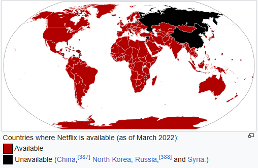

Netflix არის ამერიკული სააბონენტო ვიდეო მოთხოვნისამებრ სტრიმინგის სერვისი. სერვისი ძირითადად ავრცელებს ორიგინალურ და შეძენილ ფილმებსა და სატელევიზიო შოუებს სხვადასხვა ჟანრიდან და ხელმისაწვდომია საერთაშორისო დონეზე მრავალ ენაზე.[6] Netflix, Inc.-ის მიერ DVD-ფოსტით ფილმების გაქირავების პიონერული სერვისის დაწყებიდან თითქმის ათი წლის შემდეგ, Netflix არის ყველაზე მეტი გამომწერი ვიდეო მოთხოვნისამებრ სტრიმინგის სერვისი, 2025 წლის მონაცემებით, 301.6 მილიონი ფასიანი წევრობით 190-ზე მეტ ქვეყანაში.[5][7] 2022 წლისთვის, „Netflix Original“-ის პროდუქცია შეადგენდა მისი ბიბლიოთეკის ნახევარს შეერთებულ შტატებში და სახელობის კომპანიამ სხვა კატეგორიებშიც გადაინაცვლა, როგორიცაა ვიდეო თამაშების გამოცემა მობილური თამაშების ფლაგმანური სერვისის მეშვეობით. 2025 წლის მონაცემებით, Netflix მსოფლიოში მე-18 ყველაზე მონახულებადი ვებსაიტია, მისი ტრაფიკის 21.18% მოდის შეერთებულ შტატებზე, შემდეგ მოდის გაერთიანებული სამეფო 6.01%-ით, კანადა 4.94%-ით და ბრაზილია
Netflix ხელმისაწვდომია ყველა ქვეყანაში და ტერიტორიაზე, გარდა ჩინეთისა, ჩრდილოეთ კორეისა, სირიისა და რუსეთისა.[389] 2016 წლის იანვარში Netflix-მა გამოაცხადა, რომ დაიწყებდა VPN-ის დაბლოკვას, რადგან მისი გამოყენება შესაძლებელია იმ ქვეყნიდან ვიდეოების საყურებლად, სადაც ისინი მიუწვდომელია.[390] VPN-ის დაბლოკვის შედეგად, ადამიანებს მხოლოდ მთელ მსოფლიოში ხელმისაწვდომი ვიდეოების ყურება შეუძლიათ, სხვა ვიდეოები კი ძიების შედეგებიდან იმალება.[391] Netflix-ზე მრავალფეროვნებაა წარმოდგენილი.[საჭიროა დაზუსტება] ებრაული და მარჯვნიდან მარცხნივ ინტერფეისის ორიენტაცია, რაც მრავალ ბაზარზე გავრცელებული ლოკალიზაციის სტრატეგიაა, განსაზღვრავს ისრაელის მომხმარებლის ინტერფეისის ლოკალიზაციას და ზოგიერთ რეგიონში Netflix გთავაზობთ უფრო ხელმისაწვდომ, მხოლოდ მობილურზე გამოწერას.[392]
მომხმარებლებს შეუძლიათ გამოიწერონ სამი გეგმიდან ერთ-ერთი; გეგმებს შორის განსხვავება ეხება ვიდეოს გარჩევადობას, ერთდროული ნაკადების რაოდენობას და მოწყობილობების რაოდენობას, რომლებზეც შესაძლებელია კონტენტის ჩამოტვირთვა.[393] 2022 წლის პირველი კვარტლის ბოლოს, Netflix-მა შეაფასა, რომ მსოფლიოში 100 მილიონი ოჯახი სხვებს უზიარებდა თავისი ანგარიშის პაროლებს.[315] 2022 წლის მარტში, Netflix-მა დაიწყო საფასურის დაწესება ჩილეში, პერუში და კოსტა რიკაში დამატებითი მომხმარებლებისთვის, რათა შეეცდებოდა ანგარიშის გაზიარების კონტროლის განხორციელებას.[313][314][315] 2022 წლის 18 ივლისს, Netflix-მა გამოაცხადა, რომ გამოსცდიდა ანგარიშის გაზიარების ფუნქციას მეტ ქვეყანაში, მათ შორის არგენტინაში, დომინიკის რესპუბლიკაში, სალვადორში, გვატემალასა და ჰონდურასში.[394] 17 ოქტომბერს, Netflix-მა გამოუშვა Profile Transfer, რათა ხელი შეეწყო ანგარიშის გაზიარების დასრულებას.[395] 2022 წლის 13 ივლისს, Netflix-მა გამოაცხადა რეკლამით მხარდაჭერილი გამოწერის ვარიანტის გაშვების გეგმები.[396] Netflix-ის დაგეგმილი სარეკლამო დონე არ მისცემს აბონენტებს საშუალებას ჩამოტვირთონ კონტენტი, როგორიცაა არსებული რეკლამის გარეშე პლატფორმა.[397] 2022 წლის 20 ივლისს გამოცხადდა, რომ Netflix-ში რეკლამით მხარდაჭერილი დონე 2023 წელს გამოვიდოდა, თუმცა ის არ შეიცავდა კონტენტის სრულ ბიბლიოთეკას.[398] ოქტომბერში, გამოშვების თარიღად გამოცხადდა 2022 წლის 3 ნოემბერი და ის 12 ქვეყანაში გამოვიდა: აშშ, კანადა, მექსიკა, ბრაზილია, გაერთიანებული სამეფო, საფრანგეთი, გერმანია, იტალია, ესპანეთი, ავსტრალია, იაპონია და სამხრეთ კორეა.[399][400][401] რეკლამით მხარდაჭერილ გეგმას ერქვა „ძირითადი რეკლამებით“ და გამოშვებისას შეერთებულ შტატებში თვეში 6.99 დოლარი ღირდა.[402] 2023 წლის 24 თებერვალს Netflix-მა მსოფლიოს 30-ზე მეტ ქვეყანაში შეამცირა გამოწერის ფასები, რათა ამ ქვეყნებიდან მეტი აბონენტი მოეზიდა. მალაიზია, ინდონეზია, ტაილანდი, ფილიპინები, ხორვატია, ვენესუელა, კენია და ირანი იმ ქვეყნების სიაშია, სადაც გამოწერის ღირებულება შემცირდება.[403] იმავე თვეში უფრო მკაცრი წესები პაროლის გაზიარების საწინააღმდეგოდ გავრცელდა კანადაში, ახალ ზელანდიაში, პორტუგალიასა და ესპანეთში.[404] 2023 წლის მაისში ეს ზომები კიდევ უფრო გაფართოვდა შეერთებული შტატებისა და ბრაზილიის აბონენტებზე.[405][406][407] 2023 წლის ივლისში Netflix-მა წლის მეორე კვარტალში 5.9 მილიონი გამომწერი დაამატა, სულ 238.39 მილიონი გამომწერით. შეერთებულ შტატებსა და კანადაში 1.2 მილიონი გამომწერი იყო, რაც 2021 წლის შემდეგ ყველაზე დიდი რეგიონალური კვარტალური ზრდა იყო.[408][409] თებერვალში Netflix-მა გამოაცხადა, რომ პაროლის გაზიარებასთან დაკავშირებით უფრო მკაცრ რეგულაციებს დააწესებდა და 2023 წლის მაისისთვის მან დაიწყო მკაცრი ზომების მიღება აშშ-ში, დიდ ბრიტანეთსა და ავსტრალიაში. ამ ახალი წესების თანახმად, რამდენიმე ადამიანს შეუძლია გამოიყენოს და გაიზიაროს ერთი ანგარიში, მაგრამ ისინი ერთსა და იმავე ოჯახში უნდა იყვნენ. Netflix ოჯახს განსაზღვრავს, როგორც ადამიანებს, რომლებიც ცხოვრობენ ანგარიშის მფლობელთან ერთად. მომხმარებლებს სთხოვენ, დააყენონ ძირითადი ადგილმდებარეობა მოწყობილობის IP მისამართის მიხედვით.[410] Netflix-მა 2024 წლის მეორე კვარტალში 8.05 მილიონი ახალი გამომწერი გამოაცხადა, რაც 2023 წლის მეორე კვარტალში დამატებულ 5.9 მილიონ გამომწერზე მეტია.[411][412] 2024 წლის ივლისში Netflix-მა საფრანგეთისა და აშშ-ს მომხმარებლებისთვის ყველაზე იაფი სააბონენტო გეგმის თანდათანობით გაუქმება დაიწყო, ერთი წლის შემდეგ, რაც ეს გეგმა კანადისა და დიდი ბრიტანეთისთვის გაუქმდა. ამ ქვეყნების წევრებს აქვთ შესაძლებლობა დარეგისტრირდნენ როგორც სტანდარტულ, ისე სარეკლამო გეგმაზე.[413][414]